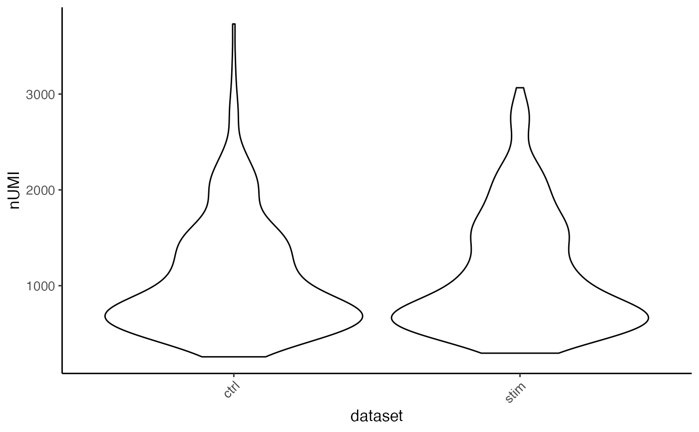
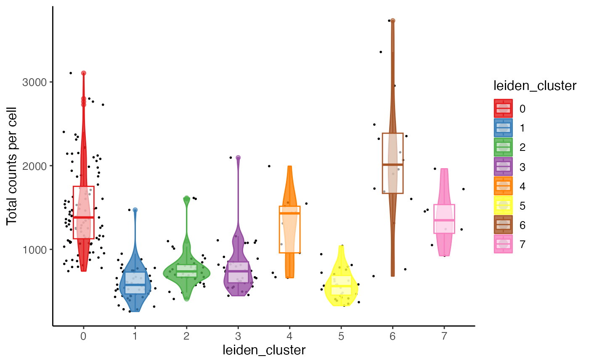
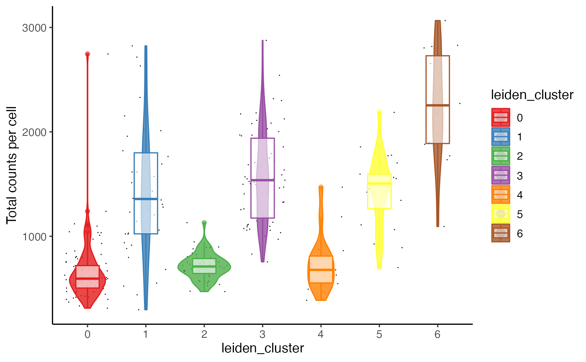
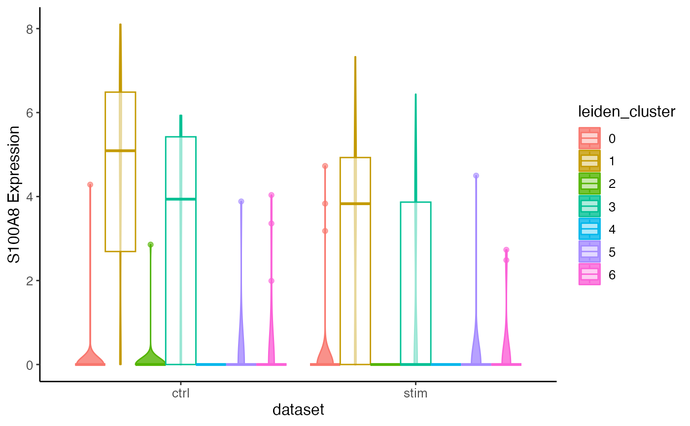

This function allows for using available cell metadata, feature
expression or factor loading to generate violin plot, and grouping the data
with available categorical cell metadata. Available categorical cell metadata
can be used to form the color annotation. When it is different from the
grouping, it forms a nested grouping. Multiple y-axis variables are allowed
from the same specification of slot, and this returns a list of violin
plot for each. Users can further split the plot(s) by grouping on cells (e.g.
datasets).
Usage
plotCellViolin(
object,
y,
groupBy = NULL,
slot = c("cellMeta", "rawData", "normData", "scaleData", "H.norm", "H"),
yFunc = NULL,
cellIdx = NULL,
colorBy = NULL,
splitBy = NULL,
titles = NULL,
...
)Arguments
- object
liger object
- y
Available variable name in
slotto look for the value to visualize.- groupBy, colorBy
Available variable name in
cellMetaslot to look for categorical grouping. See details. DefaultNULLproduces no grouping and all-black graphic elements.- slot
Choose the slot to find the
yvariable. See Details. Default"cellMeta".- yFunc
A function object that expects a vector/factor/data.frame retrieved by
yas the only input, and returns an object of the same size, so that the y-axis is replaced by this output. Useful when, for example, users need to scale the gene expression shown on plot.- cellIdx
Character, logical or numeric index that can subscribe cells. Missing or
NULLfor all cells.- splitBy
Character vector of categorical variable names in
cellMetaslot. Split all cells by groupings on this/these variable(s) to produce a violin plot containing only the cells in each group. DefaultNULL.- titles
Title text. A character scalar or a character vector with as many elements as multiple plots are supposed to be generated. Default
NULL.- ...
More plot setting arguments. See
.ggCellViolinand.ggplotLigerTheme.
Value
A ggplot object when a single plot is intended. A list of ggplot
objects, when multiple y variables and/or splitBy are set. When
plotly = TRUE, all ggplot objects become plotly (htmlwidget) objects.
Details
Available option for slot include: "cellMeta",
"rawData", "normData", "scaleData", "H.norm"
and "H". When "rawData", "normData" or
"scaleData", y has to be a character vector of feature names.
When "H.norm" or "H", colorBy can be any valid index to
select one factor of interests. Note that character index follows
"Factor_[k]" format, with replacing [k] with an integer.
When "cellMeta", y has to be an available column name in
the table. Note that, for y as well as groupBy, colorBy
and splitBy since a matrix object is feasible in cellMeta
table, using a column (e.g. named as "column1" in a certain matrix
(e.g. named as "matrixVar") should follow the syntax of
"matrixVar.column1". When the matrix does not have a "colname"
attribute, the subscription goes with "matrixVar.V1",
"matrixVar.V2" and etc. These are based on the nature of
as.data.frame method on a DataFrame object.
groupBy is basically send to ggplot2::aes(x), while
colorBy is for the "colour" aesthetics. Specifying colorBy
without groupBy visually creates grouping but there will not be
varying values on the x-axis, so boxWidth will be forced to the same
value as violinWidth under this situation.
Examples
plotCellViolin(pbmcPlot, y = "nUMI", groupBy = "dataset", slot = "cellMeta")

plotCellViolin(pbmcPlot, y = "nUMI", groupBy = "leiden_cluster",
slot = "cellMeta", splitBy = "dataset",
colorBy = "leiden_cluster",
box = TRUE, dot = TRUE,
ylab = "Total counts per cell",
colorValues = RColorBrewer::brewer.pal(8, "Set1"))
#> $nUMI.ctrl
#> Warning: Duplicated `override.aes` is ignored.

#>
#> $nUMI.stim
#> Warning: Duplicated `override.aes` is ignored.

#>
plotCellViolin(pbmcPlot, y = "S100A8", slot = "normData",
yFunc = function(x) log2(10000*x + 1),
groupBy = "dataset", colorBy = "leiden_cluster",
box = TRUE, ylab = "S100A8 Expression")
#> Warning: Duplicated `override.aes` is ignored.
